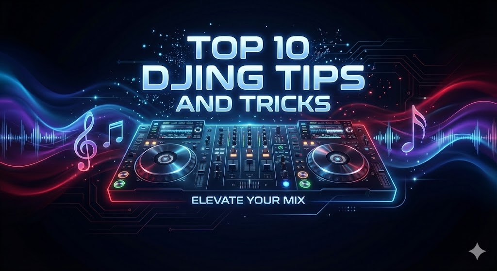
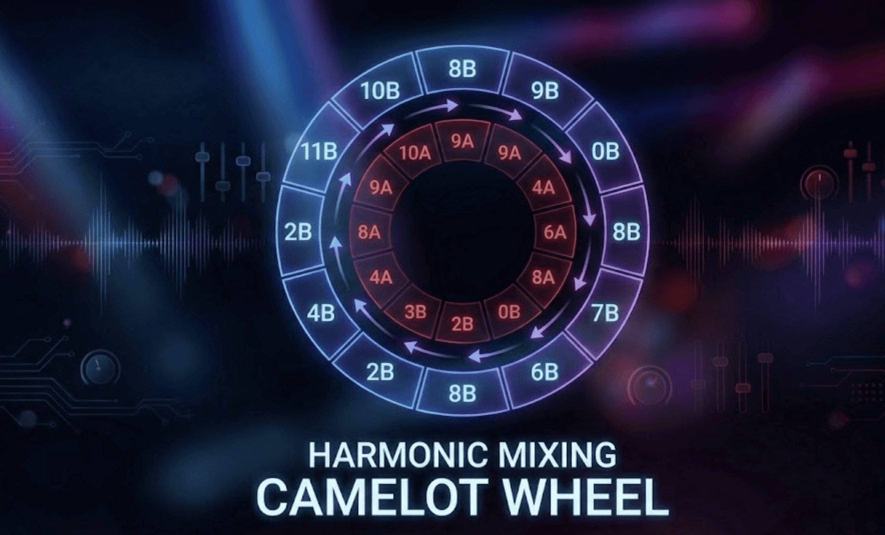
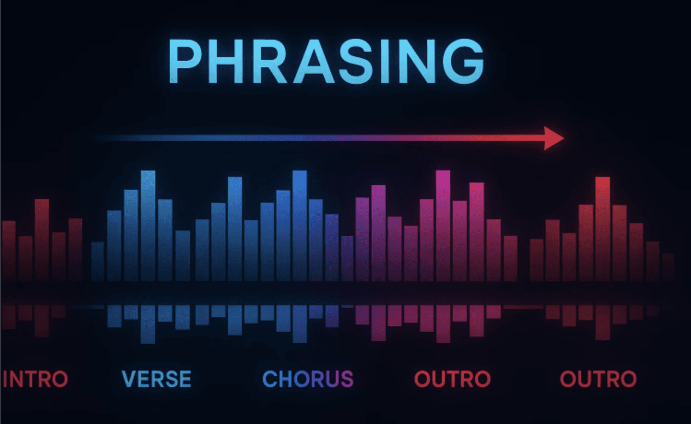
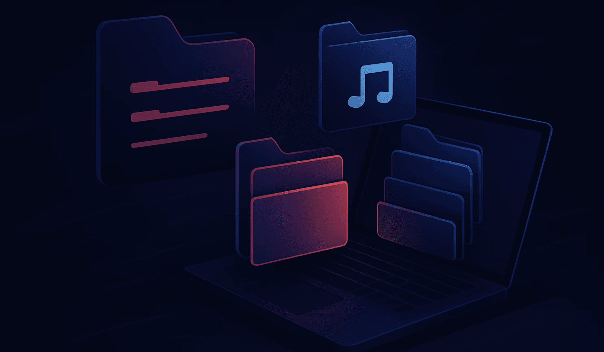
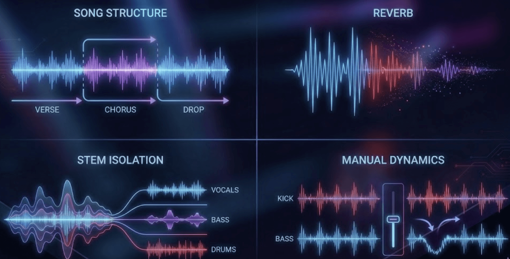
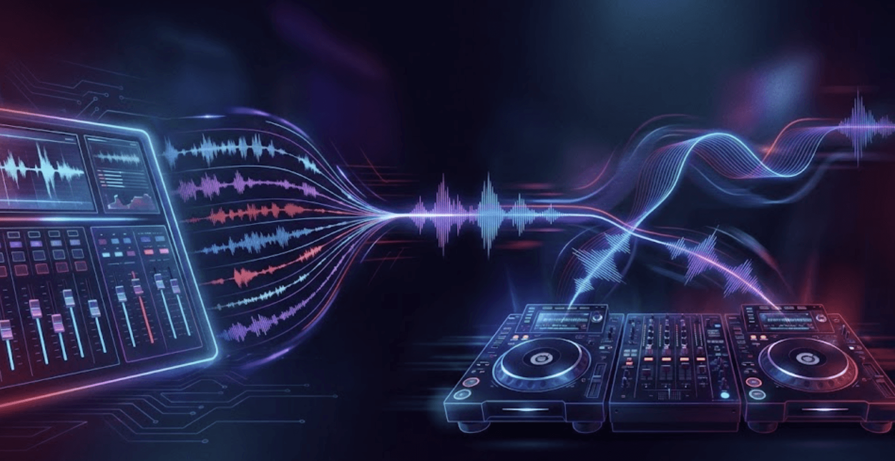

Pro Tips

As someone who has spent over a decade behind the decks in everything from dimly lit basement clubs to massive festival stages, I’ve learned that the difference between a good DJ and a great one often comes down to the small, disciplined habits that keep the dance floor moving, which is exactly why I rely on tools like Pulse to ensure my track selection never misses a beat.
What You’ll Learn
- Essential techniques for maintaining the energy of the dance floor.
- How to use harmonic mixing and phrase mixing to create professional-grade transitions.
- Advanced methods for utilizing creative tools like loops and stem separation.
- How to leverage PulseDJ.com to find the perfect next track every time you play.
Introducing PulseDJ.com : Your AI Co-Pilot
While mastering these top dj tips takes practice, PulseDJ.com provides a massive advantage. PulseDJ is an AI co-pilot designed to run alongside your dj software like Serato, Rekordbox, or Traktor. As you start playing tracks, Pulse analyzes millions of real-world sets to recommend the best next track in real-time.
It looks at key compatibility, bpm, and historic usage from other dj performances to suggest the perfect tune to keep your flow going. It even highlights harmonically compatible tracks in green, making harmonic mixing effortless. Because it reads your history files without "hooking into" your software, it is incredibly stable and won't cause your main system to crash.
Download PulseDJ Completely Free!

1. Master the Fundamentals of Rhythm and Tempo
Before you dive into advanced dj techniques, you have to nail the basics of beatmatching. Every dj needs a good understanding of how rhythmic patterns work across different genres. Whether you are a beginner dj or have been playing gigs for years, the foundation of a dj set is the bpm (beats per minute).
When you start playing a new tune, use your pitch control to align the tempo of the incoming track with the track playing on the speakers. I always keep one ear in my headphones and the other ear on the booth monitor. This allows me to hear both songs simultaneously to ensure the kick drums are perfectly aligned. Remember, even with dj software doing the heavy lifting, your ears are your most powerful tools.
Learn How To Beatmatch for DJs
2. Harmonic Mixing: The Key to Seamless Sets

If you want your dj mixes to sound professional, you must understand harmonic mixing. This involves choosing two songs that are in compatible keys. When you mix tracks that share key compatibility, the melodies and vocal lines blend without clashing.
Most modern djing platforms use the Camelot Wheel (like 8A, 5B) to show the key of a track. When two tracks are harmonically aligned, the transition feels like one continuous piece of music. This is a secret used by many djs to maintain the flow of the dance floor without any jarring shifts in mood.
Read my full guide on Harmonic Mixing for DJs.
Feature
Harmonic Mixing (Camelot)
Traditional Mixing
Main Focus
Musical keys and compatibility
Beatmatching and tempo
Transition Feel
Smooth, melodic, "invisible"
Energetic, rhythmic, distinct
Tool Used
Key analysis (e.g., 8A to 8B)
Pitch faders and BPM sync
Best For
Deep House, Trance, Melodic Techno
Hip hop, Open Format, Techno
3. Understand Phrase Mixing for DJs

One of the most important djing skills is phrase mixing. Most electronic music is structured in phrases of 16 or 32 beats. If you drop the second track at the wrong time, the energy of the rhythm will feel "off."
Always aim to start your incoming track at the beginning of a new phrase in the one track that is currently live. This ensures that the basslines or melodies change over at a natural point, keeping the audience in the groove. Using a cue point at the start of a verse or chorus in your music library helps you hit these marks consistently.
Read the full guide on Phrase Mixing for DJs
4. Manage Your Gain and Avoid the Red Lights
It’s tempting to push the master volume when the crowd is going wild, but "Red means stop." Running your dj mixer or dj controller into the red lights causes digital distortion, which ruins the sound quality and fatigues the audience's ears.
Keep your levels in the green and yellow. If you need more volume, turn up the house PA system, not your individual channel gains. A clean set sound is what separates an amateur from a professional who understands the physics of sound.
5. Curate a Deep and Organized Music Collection

Your music collection is your greatest asset. Don't just download the latest top dj tips charts; hunt for the tune that will become your signature sound.
Organizing your playlist by genre, energy level, or bpm makes it much easier to find the next track under pressure. A well-vetted music library allows you to spend less time looking at your screen and more time watching the crowd's reaction.
Learn How To Create and Organize a DJ Music Library
6. Use Creative Tools: Loops and Stem Separation

Modern dj software offers incredible creative tools. I love using loops to extend an intro or outro, giving me more time to mix. If a track has a great beat but a vocal that doesn't fit, stem separation allows you to remove the vocal and just mix the rhythm or basslines. This level of control allows you to create live mashups and unique versions of popular songs.
7. The Power of the Cue Button and Headphones
Your headphones are for more than just beatmatching. Use them to listen to the incoming track to check the EQ. Is the bass too heavy? Is there a vocal that will clash? By using the cue button, you can prep the second track perfectly before the audience ever hears a note. It’s about being prepared so the mix feels effortless once the fader goes up.
8. Master Your Effects: Reverb and Filters
Don't overdo the sound effects. A little reverb or a high-pass filter can help a track fade out gracefully, but "button-mashing" effects will quickly annoy your audience. Use effects to enhance the flow, not to mask a poor mix. I find that a subtle filter sweep on the kick drums of the outgoing track is often all you need to make space for the new tune.
9. Read the Crowd and Adapt

The best mixes in the world won't matter if nobody is dancing. Reading the crowd is one of the most vital dj skills. If you are playing techno but the energy is dipping, maybe it's time to switch to a different genre or a higher bpm. Watch how people move. If they start leaving the dance floor, it’s a sign that you need to change the flow and try something creative.
10. Stay Prepared and Avoid "Blacking Out"
We’ve all been there: the current track is ending, and you have no idea what to play next. This "blackout" can ruin a dj set. Having a backup playlist of tracks that work in almost any situation is a lifesaver.
This is also where having an AI co-pilot like PulseDJ becomes a game-changer for your workflow.
Start DJing Better with PulseDJ
Mastering dj mixes is a journey of constant learning and refinement. By focusing on your rhythm, staying out of the red lights, and learning to read the crowd's reaction, you will develop a signature sound that stands out. Whether you're a beginner dj or looking for advanced dj techniques, the right tools can make all the difference in your performance.
Ready to take your sets to the next level and never "black out" again?
Download PulseDJ today to get real-time, intelligent track suggestions and access the Hot 100 charts to see what’s trending on dance floors worldwide.
‹ Digital Crate Digging in 2026: How to Find "Hidden Gems" in Your Own Library